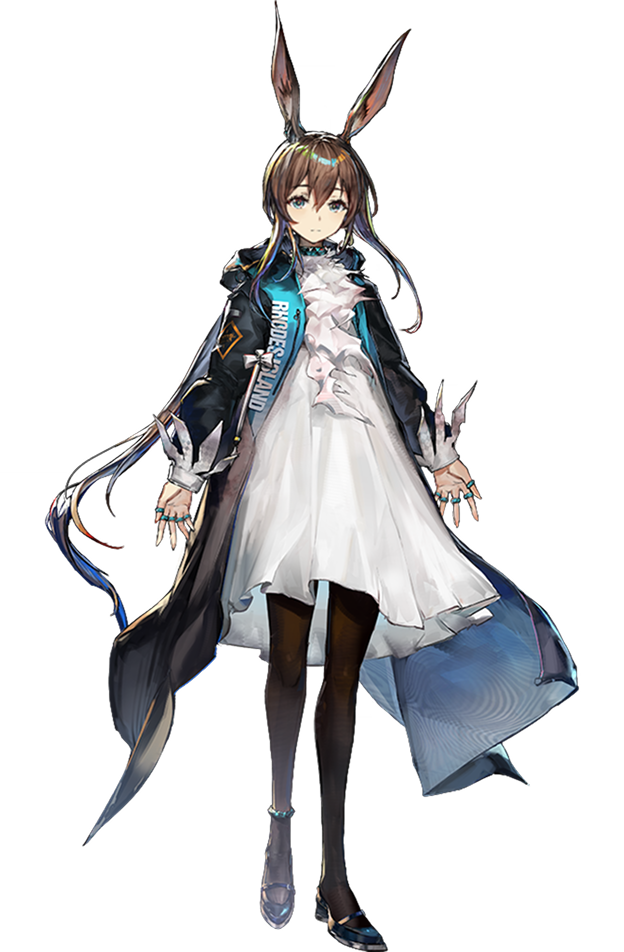
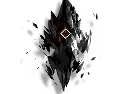
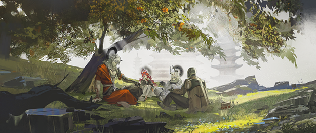
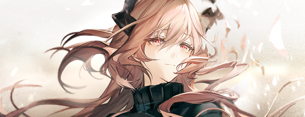
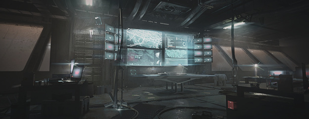
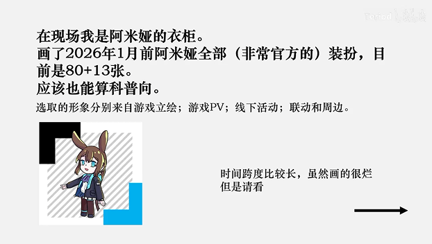

AMIYA
阿米婭
Trust & Guard
01簡介Profile
羅德島的公開領袖，在內部擁有最高執行權。
雖然，從外表上看起來僅僅是個不成熟的少女，實際上，她卻是深受大家信任的合格的領袖。
現在，阿米婭正帶領著羅德島，為了感染者的未來，為了讓這片大地掙脫礦石病的陰霾而不懈努力。
02基礎資料Information
- 性別
- 女
- 戰鬥經驗
- 三年→四年
- 出身地
- 雷姆必拓
- 生日
- 12 月 23 日
- 種族
- 卡特斯/奇美拉
- 身高
- 142cm→150cm
- 礦石病感染情況
- 體表有源石結晶分佈，參照醫學檢測報告，確認為感染者。
03綜合體檢測試Evaluation
04臨床診斷分析Analysis

IMAGINGSCAN 01造影檢測結果顯示，該干員體內臟器輪廓模糊，可見異常陰影，循環系統內源石顆粒檢測異常，有礦石病感染跡象，現階段可確認為礦石病感染者。
05檔案Record
FILE 01
升變檔案一
史載，薩卡茲君王奎隆的佩劍，長度約在0.9到1.2米之間，寬約5厘米，材質不明，通體呈黑色，劍身銘刻薩卡茲傳統文字，釋作“爭鬥在此止歇”。
奎隆繼位後整頓卡茲戴爾，深感西方荼害薩卡茲已久，遂率領部分薩卡茲部族向東方遷移，後下落不明。

FIG. 01傳說，奎隆有令其敵人不戰而退之威。 有記述稱奎隆之敵在與奎隆作戰時彷彿會遭受數倍於武器重量之重壓，在物理與意誌上同遭奎隆捶打，如若僥倖不死，也多成殘廢。
但也有人稱奎隆為仁愛君主，任何遭其佩劍劃破的創口都不會流血，如若退後，則能苟全性命。
不過，部分古籍宣稱，在奎隆繼位前，其佩劍就已於戰爭中毀壞，日後奎隆所持武器，只是他以法術塑造出的脆弱外形。 這與奎隆此後在薩卡茲衝突中的表現不符，且少有人能解釋在此前提下為何奎隆沒有重鑄愛劍。
我推測，奎隆的確有以法術塑形武器之力，其理論基點同樣根植於王位，只是奎隆礙於前遊俠之身份而甚少使用此類法術。 當然，文獻記載，奎隆繼位後，其佩劍便時常散發青色幽光，如同焰息。
由於奎隆性格激烈，此劍日後也被稱作“青色怒火”。 薩卡茲的大多傳說都隨卡茲戴爾不斷遭毀而佚失，這對歷史考察造成很大困難。
近日不斷有薩卡茲學者呼籲重塑薩卡茲的歷史，但研究中為宣揚薩卡茲種之崇高性而向研究材料添油加醋之行為，實為污染。
——Logos
FILE 02
升變檔案二
殿下的事情？博士，您確定我是為您解答這個問題的合適人選嗎？我只是一個普普通通的薩卡兹鍋爐工，讓我對羅德島的博士賣弄見識怎麼說得過去......您就是想聽聽羅德島上的一位普通薩卡兹會怎樣談論一位魔王？
這裡離鍋爐近，您吹會兒風扇，讓我想想。

FIG. 02在殿下之前，统治卡兹戴爾的魔王名為以勒什。他不是残暴的君主，但也没有什么功績；没有王庭效忠于他，也没有人反叛。後来，我們都知道了，在他的宫廷中，有一對混血兄妹：一位是魔王的持劍護衛，另一位是魔王的御前衣匠。是的，將軍與殿下，就像您已經知道的那樣。
以勒什戰死後，他們站出来，帶領剩下的薩卡兹發起反擊。我還記得，在课課本上是這麼說的：“還未加冕為魔王的殿下没有放下針線，她與眾英雄一同紡織戰爭的策略；当貪婪的敌敵人湧進薩卡兹的城市時，也踏入了死亡的陷阱。”我們從一場血戰中活了下来，這並不容易。
有一个歌利亞戰士倒在敵人的屍堆裡，奄奄一息，直到殿下来到他的面前。他看到殿下握住一束微弱的光線，她手中若隱若現的手杖，以無色紡錘上的線編織成型。創口彌合，破碎的肢體重歸原位——他從未見過這樣的源石技藝，就像是一位衣匠在縫補生命。
殿下成為了魔王，很多人欣喜若狂，也有人不太高興，將軍砍掉了後者的頭。接下来的兩百多年......殿下一直在嘗試為卡兹戴爾療傷。
博士，這是老生常談的廢話，但薩卡兹的血每時每刻都灑在卡兹戴爾的土地上。殿下想要改變。身為魔王，她能做的事情很多，但需要她去做的事情則......不計其數。在凱爾希女士的幫助下，殿下親手救過很多人。但殿下很清楚，在她救下十個人的時間裡，還有一百人失去性命；救下一百人，便已有一千人再也無法得救。況且，即使是魔王，面對礦石病也束手無策。
内鬥幾年，因為殿下離開了卡兹戴爾，有不少人對她大加譏諷。我遇到過很多次，卻不知道該說些什麼。他們的母親在近一百年来興建的醫院中平安分娩，他们自己則在近五十年来興辦的流動學校中接受教育。因此，他們才有機會學到“盲目的仁慈”“缺乏遠見”與“受外族欺瞞蠱惑”這樣的話......啊，我對您說這些幹什麼，真是不好意思。

RHODES ISLANDFIG. 03我不敢揣測殿下的心事。我相信阿米婭，您，還有凱爾希女士一定會為羅德島盤算出一個更好的未來。
但有時，我也會想，这艘船是否能在某一天......實現殿下的願望。
06阿米婭的衣櫃Wardrobe

BILIBILI 5:35